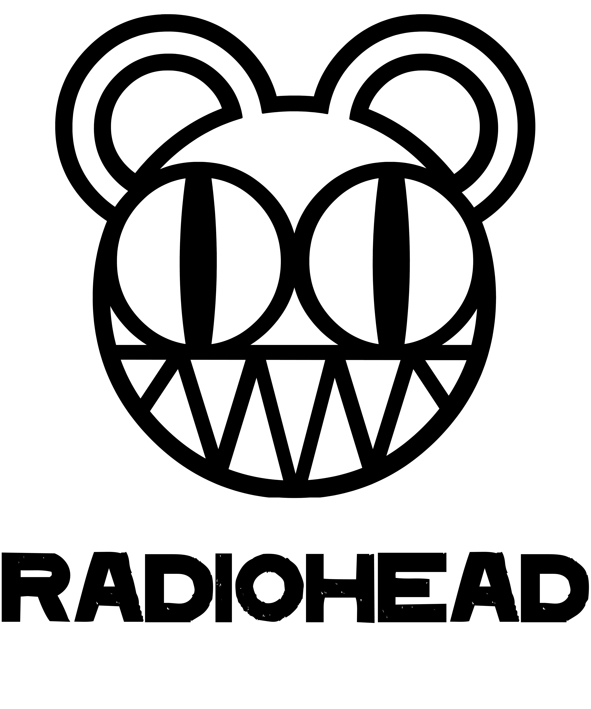
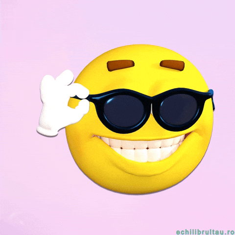
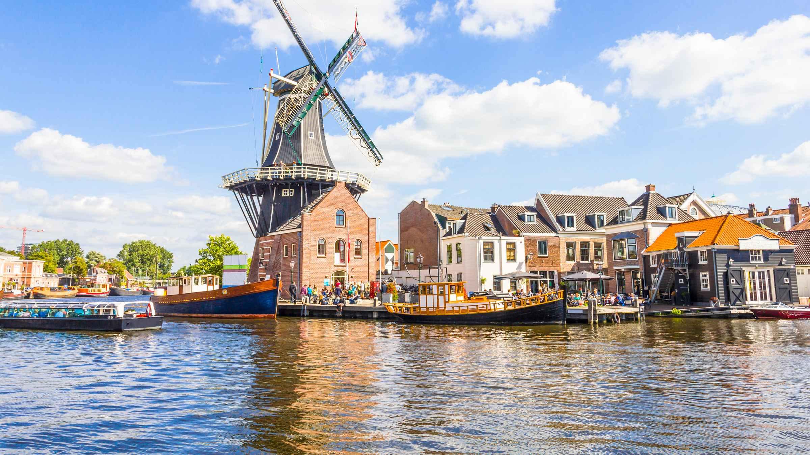
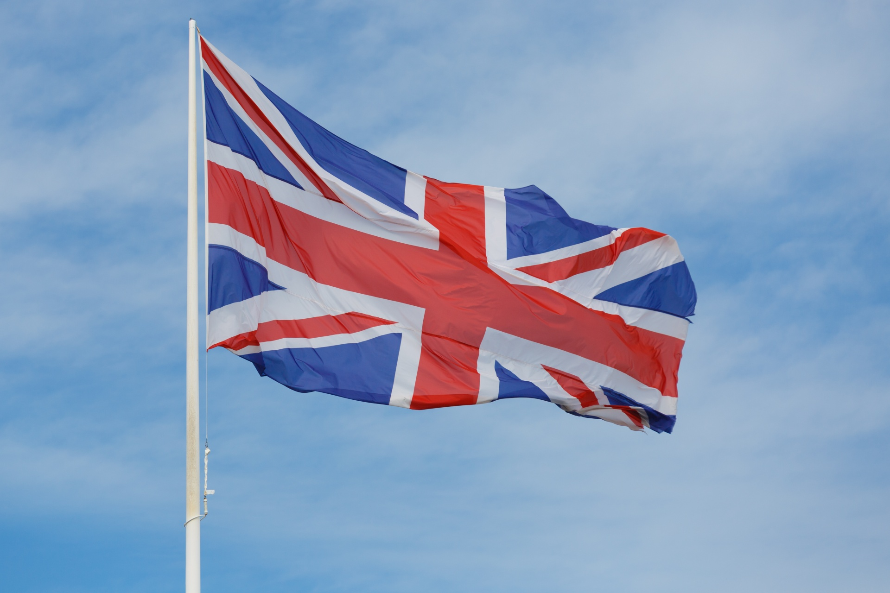

Wie ben ik
Mijn naam is Lucas ik kom uit haarlem en ik zit momenteel
in mijn eerste jaar op het mediacollege in het eerste jaar
software development.


Mijn woonplaats
Ik woon al sinds mijn geboorte in haarlem
in een groot huis tegenover het kenaupark tot mijn ouder ging scheiden toen ik acht was, maar
gelukkig woon ik nu nog steeds in deze mooie stad waar ik nu 2 huizen heb en gelukkig ben. Ik
vind Haarlem zo leuk omdat je er veel kan doen met je vrienden zoals in de stad gaan of in het
park voetballen.

In mijn vrije tijd vind ik het altijd super leuk
om met vrienden dingen te doen zoals
naar buiten in de stad gaan maar ik hou ook
super veel om met ze of alleen te gamen, Ook
hou ik van basketballen wat ik 8 jaar heb
gedaan en ook vind ik lezen af en toe leuk
Mijn favoriete game is titanfall 2 omdat dat
mijn eerste shoot was die ik ooit heb gespeeld en omdat de game super uniek is door het beweeg
systeem dat je laat rennen op muren.

Wat kan ik al
Ik ben super goed in engels en nederlands
ik was zelfs zo goed in engels dat ik een
uitnodiging kreeg van cambridge om daar
een examen te maken voor een diploma
wat ik toch niet heb gedaan omdat het veel
geld kostte en ik kan ook al wat programmeren in scratch
Ook ben ik natuurlijk goed in basketbal.

Mijn top 10 muziek artiesten en games
dit zijn mijn top 10 artiesten en games maar niet op volgorde van meest favoriet naar minst
Games
1:Titanfall
2:God of war 2018
3:Ghost of tsushima
4: Red dead redemption 2
5:Deep rock galactic
6:Hollow knight
7:Grounded
8:Helldivers 2
9:Subnautica
10:Elden ring
Muziek
1:Radiohead
2:Linkin park
3:Limp bizki
4:Metallica
5:Ac/Dc
6:guns n roses
7:Foo fighters
8:Queens of the stone age
9:Queen
10:laufey